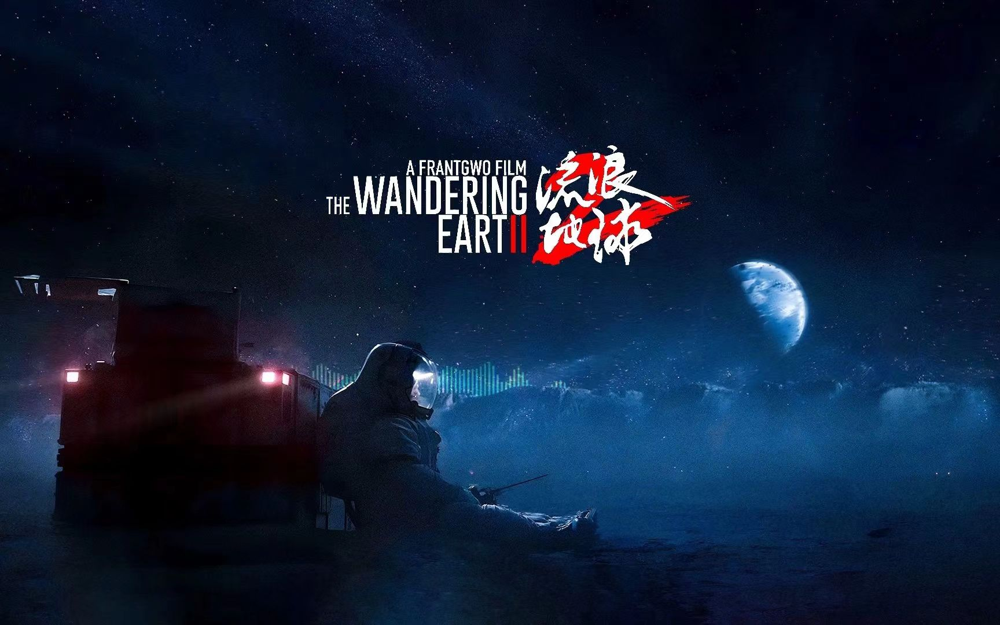
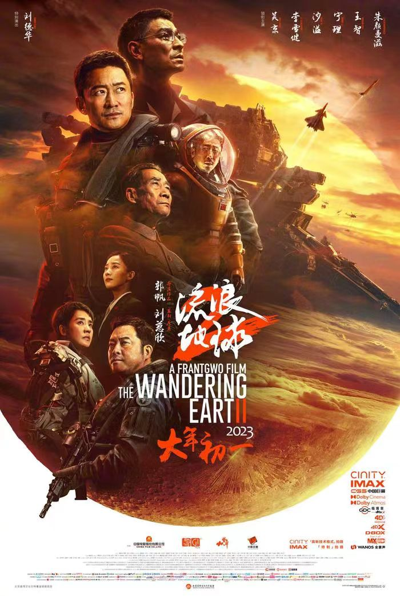

- 关于PY
- 服务大厅
- 开放平台
- 加入我们
- 联系我们
- 网站合作
- 用户协议
- 公司名称：PY科技有限公司 |公司地址：XX市XX区XX路666号 |电话：666-123456789

电影推荐

流浪地球
类型：科幻、灾难
导演：郭帆
主演：吴京、刘德华、李雪健
时长：173分钟
简介：本片根据刘慈欣同名科幻小说改编。电影《流浪地球2》的故事围绕《流浪地球》前作展开，该片以提出计划将建造1万座行星发动机的时代为故事背景，讲述了“太阳危机”即将来袭，世界陷入一片恐慌之中，万座行星发动机正在建造中，人类将面临末日灾难与生命存续的双重挑战的故事
评分：9.9
类型：喜剧
导演：闫非、彭大魔
主演：沈腾、马丽
时长：133分钟
类型：喜剧、动作、科幻
导演：肖恩·利维
主演：瑞安·雷诺兹、休·杰克曼
时长：127分钟
类型：剧情、喜剧、动作、西部
导演：姜文
主演：姜文、周润发、葛优
时长：132分钟
类型：科幻
导演：亚当·温加德
主演：哥斯拉、金刚
时长：115分钟